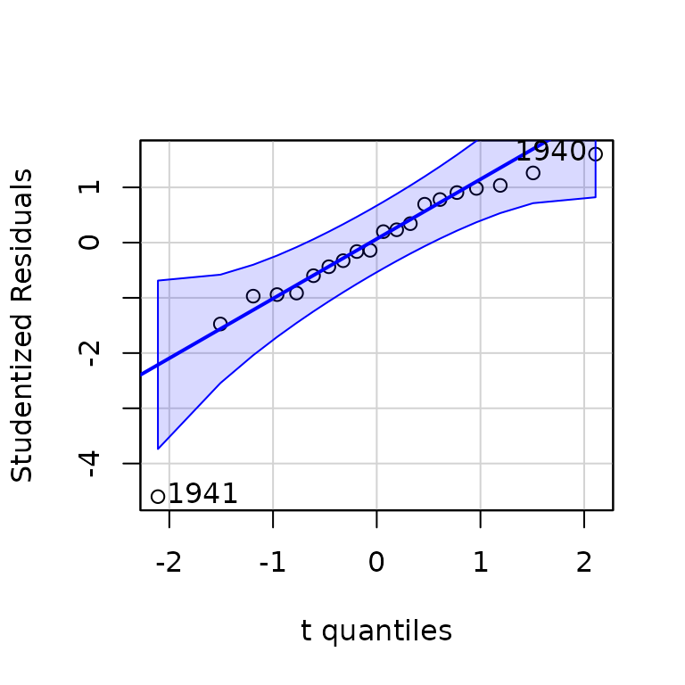
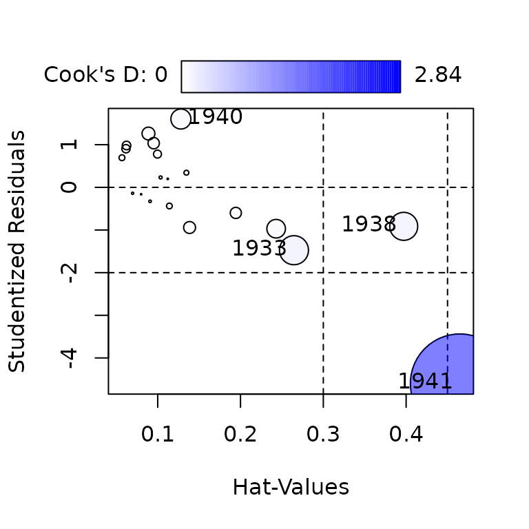
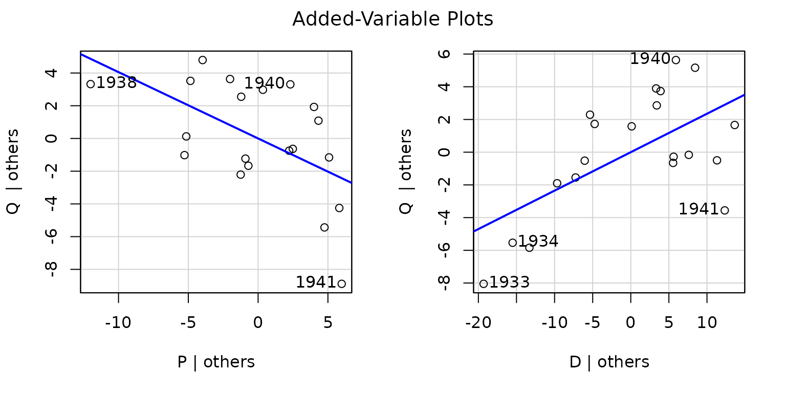
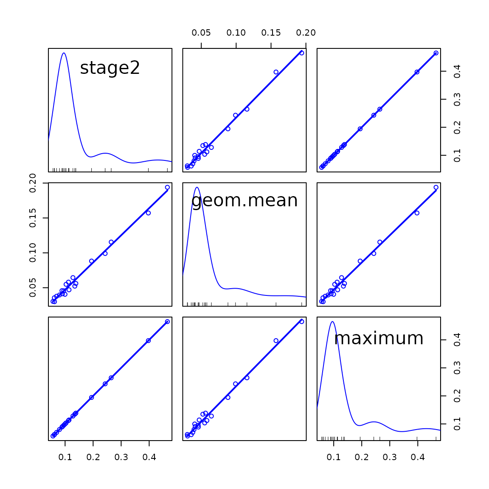
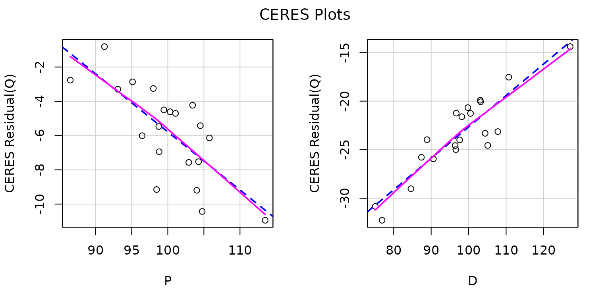
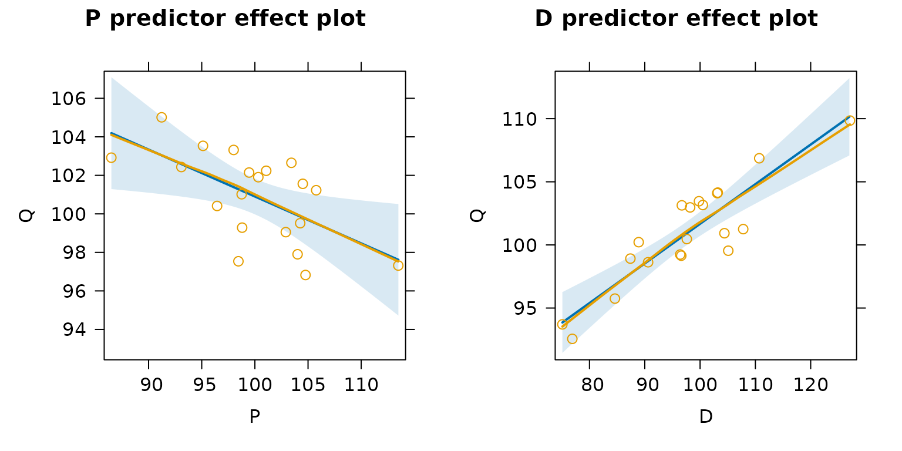
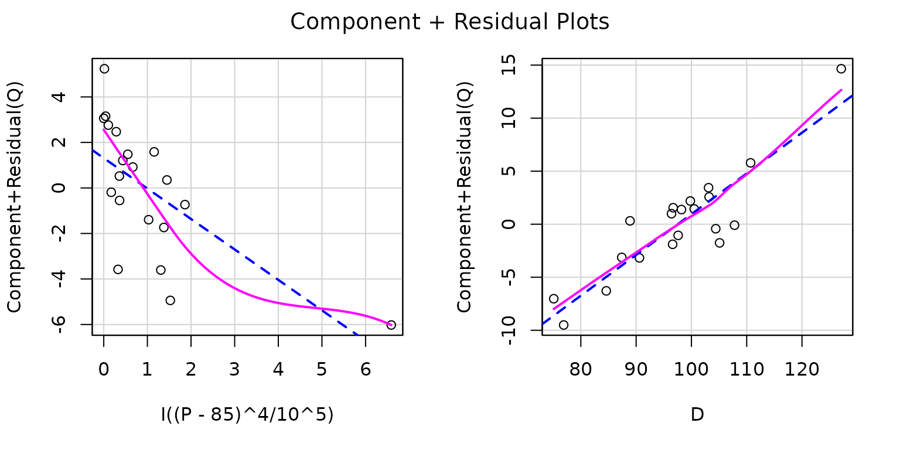
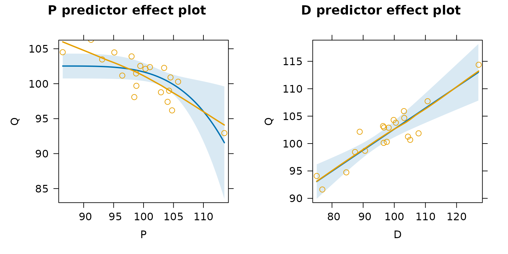
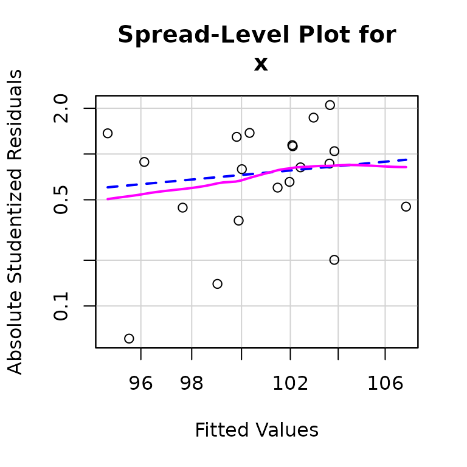
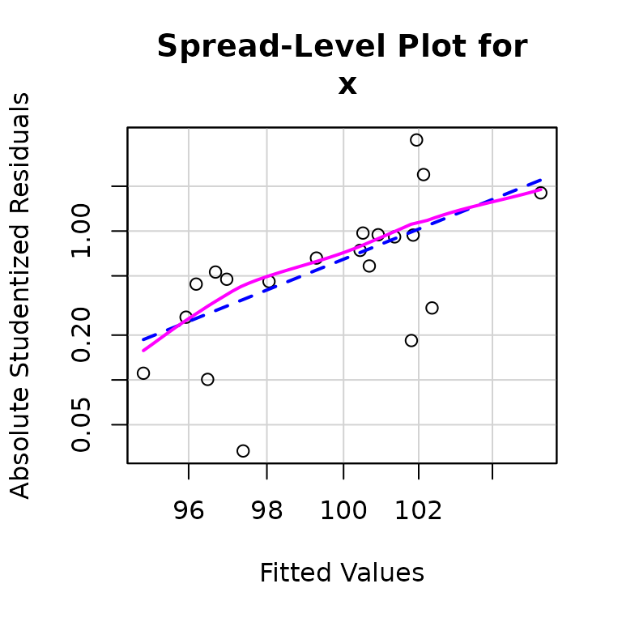

Diagnostics for 2SLS Regression
John Fox, Christian Kleiber, Achim Zeileis
last modified: 2020-08-04
Source:vignettes/Diagnostics-for-2SLS-Regression.Rmd
Diagnostics-for-2SLS-Regression.RmdIntroduction
The ivreg package extends a variety of standard numeric and graphical regression diagnostics to linear models fit by two-stage least-squares (2SLS) regression, a commonly employed method of instrumental-variables estimation for potentially overidentified structural equations in which there are endogenous regressors. The ivreg.fit() function in the package computes the 2SLS estimator employing a low-level interface not generally intended for direct use, and returns a list containing quantities that faciliate the computation of various diagnostics. The ivreg() function provides a user-friendly formula-based interface to ivreg.fit().
ivreg() is derived from and supersedes the ivreg() function in the AER package (Kleiber and Zeileis 2008), making additional provision for regression diagnostics. The principal subject of this vignette is the rationale for the extension of various standard regression diagnostics to 2SLS and the use of functions in the ivreg package to compute them, along with functions in other packages, specifically the base-R stats package (R Core Team 2020) and the car and effects packages (Fox and Weisberg 2019), that work with the "ivreg" objects produced by ivreg().
Review of 2SLS Estimation
We’ll need some basic results for 2SLS regression to develop diagnostics and so we review the method briefly here. 2SLS regression was invented independently in the 1950s by Basmann (1957) and Theil (as cited in Theil 1971), who took slightly different but equivalent approaches, both described below, to derive the 2SLS estimator.
We want to estimate the linear model \(y = X \beta + \varepsilon\), where \(y\) is an \(n \times 1\) vector of observations on a response variable, \(X\) is an \(n \times p\) matrix of regressors, typically with an initial columns of \(1\)s for the regression constant, \(\beta\) is a \(p \times 1\) vector of regression coefficients to be estimated from the data, and \(\varepsilon\) is an \(n \times 1\) vector of errors assumed to be distributed \(N_n(0, \sigma^2 I_n)\) where \(N_n\) is the multivariate-normal distribution, \(0\) is an \(n \times 1\) vector of zeroes, and \(I_n\) is the order-\(n\) identity matrix. Suppose that some (perhaps all) of the regressors in \(X\) are endogenous, in the sense that they are thought not to be independent of \(\varepsilon\). As a consequence, the ordinary least-squares (OLS) estimator \(b_{\mathrm{OLS}} = (X^\top X)^{-1} X^\top y\) of \(\beta\) is generally biased and inconsistent.
Now suppose that we have another set of \(q\) instrumental variables (IVs) \(Z\) that are independent of \(\epsilon\), where \(q \ge p\). If \(q = p\) we can apply the IVs directly to estimate \(\beta\), but if \(q > p\) we have more IVs than we need. Simply discarding IVs would be inefficient, and 2SLS regression is a procedure for reducing the number of IVs to \(p\) by combining them in a sensible way.
The first stage of 2SLS regresses all of regressors in the model matrix \(X\) on the IVs \(Z\) by multivariate ordinary least squares, obtaining the \(q \times p\) matrix of regression coefficients \(B = (Z^\top Z)^{-1} Z^\top X\), and the fitted values \(\widehat{X} = Z B\). The columns of \(B\) are equivalent to the coefficients produced by separate least-squares regressions of each of the columns of \(X\) on \(Z\). If some of the columns of \(X\) are exogenous, then these columns also appear in \(Z\), and consequently the columns of \(\widehat{X}\) pertaining to exogenous regressors simply reproduce the corresponding columns of \(X\).
Because the columns of \(\widehat{X}\) are linear combinations of the columns of \(Z\), they are (asymptotically) uncorrelated with \(\varepsilon\), making them suitable IVs for estimating the regression equation. This IV step is the second stage of 2SLS in Theil’s approach.
As an alternative, we can obtain exactly the same estimates \(b_{\mathrm{2SLS}}\) of \(\beta\) by performing an OLS regression of \(y\) on \(\widehat{X}\), producing \(b_{\mathrm{2SLS}} = (\widehat{X}^\top \widehat{X}) \widehat{X}^\top y\). This is Basmann’s approach and it motivates the name “2SLS.”
Whether we think of the second stage as IV estimation or OLS regression, we can combine the two stages into a single formula: \[
b_{\mathrm{2SLS}} = [X^\top Z(Z^\top Z)^{-1} Z^\top X]^{-1} X^\top Z (Z^\top Z)^{-1} Z^\top y
\] This is what the tsls() function in the sem package (Fox, Nie, and Byrnes 2020) does, but from the point of view of developing regression diagnostics, it’s advantageous to compute the 2SLS estimator by two distinct OLS regressions, which is the approach taken by ivreg().
Unusual-Data Diagnostics for 2SLS Regression
As far as we can tell, diagnostics for regression models fit by 2SLS are a relatively neglected topic, but were addressed briefly by Belsley, Kuh, and Welsch (1980, 266–268). Deletion diagnostics directly assess the influence of each case on a fitted regression model by removing the case, refitting the model, and noting how the regression coefficients or other regression outputs, such as the residual standard deviation, change.
Case-deletion diagnostics for influential data can always be obtained by brute-force computation, literally refitting the model with each case removed in turn, but this approach is inefficient and consequently unattractive in large samples. For some classes of statistical models, such as generalized linear models (e.g., Pregibon 1981), computationally less demanding approximations to case-deletion diagnostics are available, and for linear models efficient “updating” formulas are available (as described, e.g., by Belsley, Kuh, and Welsch 1980) that permit the exact computation of case-deletion diagnostics.
As it turns out, and as Belsley, Kuh, and Welsch note, exact updating formulas for 2SLS regression permitting the efficient computation of case-delection statistics were given by Phillips (1977, Equations 15 and 16). Phillips’s formulas, reproduced here in our notation (and fixing a couple of small typos in the original), are used in the case-deletion statistics computed in the ivreg package: \[ b_{\mathrm{2SLS}-i} = b_{\mathrm{2SLS}} +A^{-1}g_i \] where \(b_{\mathrm{2SLS}-i}\) is the 2SLS vector of regression coefficients with the \(i\)-th case removed, and
\[\begin{align} A &= X^\top Z(Z^\top Z)^{-1}Z^\top X \\ g_i &= u_i[(y_i - z_i^\top a) - (y_i - r_i^\top b_{\mathrm{2SLS}})] + (u_i + j_i)(y_i - x_i^\top b_{\mathrm{2SLS}}) \\ u_i &= \frac{1 - x_i^\top A^{-1} x_i}{[1 - c_i + (x_i - r_i)^\top A^{-1} (x_i - r_i)]D_i}(x_i - r_i) + \frac{(x_i - r_i)^\top A^{-1} x_i}{[1 - c_i + (x_i - r_i)^\top A^{-1} (x_i - r_i)]D_i}x_i \\ j_i &= \frac{(x_i - r_i)^\top A^{-1} x_i}{[1 - c_i + (x_i - r_i)^\top A^{-1} (x_i - r_i)]D_i}(x_i - r_i) - \frac{1}{D_i}x_i \\ r_i &= X^\top Z (Z^\top Z)^{-1} z_i \\ c_i &= z_i^\top (Z^\top Z)^{-1} z_i \\ D_i &= 1 - x_i^\top A^{-1} x_i + \frac{[(x_i - r_i)^\top A^{-1} x_i]^2}{1 - c_i + (x_i - r_i)^\top A^{-1}(x_i - r_i)} \\ a &= (Z^\top Z)^{-1} Z^\top y \end{align}\]
Here, \(y_i\) is the value of the response for the \(i\)-th case, \(x_i^\top\) is the \(i\)-th row of the model matrix \(X\), and \(z_i^\top\) is the \(i\)-th row of the instrumental-variables model matrix \(Z\).
Belsley, Kuh, and Welsch specifically examine (in our notation) the values of \(\mathrm{dfbeta}_i = b_{\mathrm{2SLS}} - b_{\mathrm{2SLS}-i}\). They discuss as well the deleted values of the residual standard deviation \(s_{-i}\). (Belsley, Kuh, and Welsch define the residual variances \(s^2\) and \(s_{-i}^2\) respectively as the full-sample and deleted residual sums of squares divided by \(n\); in the ivreg packages, we divide by the residual degrees of freedom, \(n - p\) for the full-sample value of \(s^2\) and \(n - p - 1\) for the case-deleted values.)
Belsley, Kuh, and Welsch then compute their summary measure of influence on the fitted values (and regression coefficients) \(\mathrm{dffits}\) as \[ \mathrm{dffits}_i = \frac{x_i^\top \mathrm{dfbeta_{i}}}{s_{-i} \sqrt{x_i^\top (\widehat{X}^\top \widehat{X})^{-1} x_i}} \] where (as before) \(x_i^\top\) is the \(i\)-th row of the model matrix \(X\) and \(\widehat{X}\) is the model matrix of second-stage regressors.
Let \[ H^* = X[X^\top Z(Z^\top Z)^{-1} Z^\top X]^{-1} X^\top Z (Z^\top Z)^{-1} Z^\top \] represent the \(n \times n\) matrix that transforms \(y\) into the fitted values, \(\widehat{y} = H^* y\). In OLS regression, the analogous quantity is the hat-matrix \(H = X(X^\top X)^{-1}X^\top\). Belsley, Kuh, and Welsch note that \(H^*\), unlike \(H\), is not an orthogonal-projection matrix, projecting \(y\) orthogonally onto the subspace spanned by the columns of \(X\). (They say that \(H^*\) isn’t a projection matrix, but that isn’t true: It represents an oblique projection of \(y\) onto the subspace spanned by the columns of \(X\).) In particular, although \(H^*\), like \(H\), is idempotent (\(H^* = H^* H^*\)) and \(\mathrm{trace}(H^*) = p\), \(H^*\), unlike \(H\), is asymmetric, and thus its diagonal elements can’t be treated as summary measures of leverage, that is, as hatvalues.
Belsley, Kuh, and Welsch recommend simply using the havalues from the second-stage regression. These are the diagonal entries \(h_i = h_{ii}\) of \(H_2 = \widehat{X}(\widehat{X}^\top \widehat{X})^{-1} \widehat{X}^\top\). We discuss some alternatives below.
In addition to hatvalues, \(\mathrm{dfbeta}\), \(s_{-i}\), and \(\mathrm{dffits}\), the ivreg packages calculates Cook’s distances \(D_i\), which are essentially a slightly differently scaled version of \(\mathrm{dffits}\) that uses the overall residual standard deviation \(s\) in place of the deleted standard deviations \(s_{-i}\): \[ D_i = \frac{s_{-i}^2}{s^2} \times \frac{\mathrm{dffits}_i^2}{p} \]
Because they have equal variances and are approximately \(t\)-distributed under the normal linear model, studentized residuals are useful for detecting outliers and for addressing the assumption of normally distributed errors. The ivreg package defines studentized residuals in analogy to OLS regression as \[ \mathrm{rstudent}_i = \frac{e_i}{s_{-i} \sqrt{1 - h_i}} \] where \(e_i = y_i - x_i^\top b_{2SLS}\) is the response residual for the \(i\)-th case.
As mentioned, Belsley, Kuh, and Welsch (1980) recommend using hatvalues from the second-stage regression. That’s a reasonable choice and the default in the ivreg package, but it risks missing cases that have high leverage in the first-stage but not the second-stage regression. Let \(h_i^{(1)}\) represent the hatvalues from the first stage and \(h_i^{(2)}\) those from the second stage. If the model includes an intercept, both sets of hatvalues are bounded by \(1/n\) and \(1\), but the average hatvalue in the first stage is \(q/n\) while the average in the second stage is \(p/n\). To make the hatvalues from the two stages comparable, we divide each by its average, \(h^{(1*)}_i = \frac{h_i^{(1)}}{q/n}\) and \(h^{(2*)}_i = \frac{h_i^{(2)}}{p/n}\). Then we can define the two-stages hatvalue either as the (rescaled) larger of the two for each case, \(h_i = (p/n) \times \max \left( h^{(1*)}_i, h^{(2*)}_i \right)\), or as their (rescaled) geometric mean, \(h_i = (p/n) \times \sqrt{h^{(1*)}_i \times h^{(2*)}_i}\). The ivreg package provides both of these options.
Unusual-Data Diagnosics in the ivreg Package
The ivreg package implements unusual-data diagnostics for 2SLS regression (i.e., class "ivreg" objects produced by ivreg()) as methods for various generic functions in the stats and car packages; these functions include cooks.distance(), dfbeta(), hatvalues(), influence(), and rstudent() in stats, and avPlot() and qqPlot() in car. In particular, influence.ivreg() returns an object containing several diagnostic statistics, and it is thus more efficient to use the influence() function than to compute the various diagnostics separately. Methods provided for class "influence.ivreg" objects include cooks.distance(), dfbeta(), hatvalues(), qqPlot(), and rstudent().
The package also provides methods for various standard R regression-model generics, including anova() (for model comparison), predicted() for computing predicted values, model.matrix() (for the model or for the first- or second-stage regression), print(), residuals() (of several kinds), summary(), update(), and vcov(). The summary() method makes provision for a user-specified coefficient covariance matrix or for a function to compute the coefficient covariance matrix, such as sandwich() in the sandwich package, to compute robust coefficient covariances. The latter is supported by methods for the bread() and estfun() generics defined in sandwich.
Unusual Data Diagnostics: An Example
The ivreg package contains the Kmenta data set, used in Kmenta (1986, Ch. 13) to illustrate estimation (by 2SLS and other methods) of a linear simultaneous equation econometric model. The data, which are partly contrived, represent an annual time series for the U.S. economy from 1922 to 1941, with the following variables:
-
Q, food consumption per capita -
P, ratio of food prices to general consumer prices -
D, disposible income in constant dollars -
F, ratio of preceding year’s prices received by famers to general consumer prices -
A, time in years
The data set is small and so we can examine it in its entirety:
## Q P D F A
## 1922 98.485 100.323 87.4 98.0 1
## 1923 99.187 104.264 97.6 99.1 2
## 1924 102.163 103.435 96.7 99.1 3
## 1925 101.504 104.506 98.2 98.1 4
## 1926 104.240 98.001 99.8 110.8 5
## 1927 103.243 99.456 100.5 108.2 6
## 1928 103.993 101.066 103.2 105.6 7
## 1929 99.900 104.763 107.8 109.8 8
## 1930 100.350 96.446 96.6 108.7 9
## 1931 102.820 91.228 88.9 100.6 10
## 1932 95.435 93.085 75.1 81.0 11
## 1933 92.424 98.801 76.9 68.6 12
## 1934 94.535 102.908 84.6 70.9 13
## 1935 98.757 98.756 90.6 81.4 14
## 1936 105.797 95.119 103.1 102.3 15
## 1937 100.225 98.451 105.1 105.0 16
## 1938 103.522 86.498 96.4 110.5 17
## 1939 99.929 104.016 104.4 92.5 18
## 1940 105.223 105.769 110.7 89.3 19
## 1941 106.232 113.490 127.1 93.0 20Kmenta estimated the following two-equation model, with the first equation representing demand and the second supply: \[\begin{align} Q &= \beta_{10} + \beta_{11} P + \beta_{12} D + \varepsilon_1 \\ Q &= \beta_{20} + \beta_{21} P + \beta_{22} F + \beta_{23} A + \varepsilon_2 \end{align}\] The variables \(D\), \(F\), and \(A\) are taken as exogenous, as of course is the constant regressor (a columns of \(1\)s), and \(P\) in both structural equations is an endogenous explanatory variable. Because there are four instrumental variables available, the first structural equation, which has three coefficients, is over-identified, while the second structural equation, with four coefficients, is just-identified.
The values of the exogenous variables are real, while those of the endogenous variables were generated (i.e., simulated) by Kmenta according to the model, with the following assumed values of the parameters:
\[\begin{align} Q &= 96.5 - 0.25 P + 0.30 D + \varepsilon_1 \\ Q &= 62.5 + 0.15 P + 0.20 F + 0.36 A + \varepsilon_2 \end{align}\]
Solving the structural equations for the endogenous variables \(P\) and \(Q\) produces the reduced form of the model
\[\begin{align} Q &= 75.25 + 11.25 D + 0.125 F + 0.225 A + \nu_1\\ P &= 85.00 + 0.75 D - 0.50 F - 0.90 A + \nu_2 \end{align}\]
Kmenta independently sampled 20 values of \(\delta_1\) and \(\delta_2\), each from \(N(0, 1)\), and then set \(\nu_1 = 2 \delta_1\) and \(\nu_2 = -0.5 \nu_1 + \delta_2\).
The structural equations are estimated as follows by the ivreg() function (compare Kmenta 1986, 686):
##
## Call:
## ivreg(formula = Q ~ P + D | D + F + A, data = Kmenta)
##
## Residuals:
## Min 1Q Median 3Q Max
## -3.4305 -1.2432 -0.1895 1.5762 2.4920
##
## Coefficients:
## Estimate Std. Error t value Pr(>|t|)
## (Intercept) 94.63330 7.92084 11.947 1.08e-09 ***
## P -0.24356 0.09648 -2.524 0.0218 *
## D 0.31399 0.04694 6.689 3.81e-06 ***
##
## Diagnostic tests:
## df1 df2 statistic p-value
## Weak instruments 2 16 88.025 2.32e-09 ***
## Wu-Hausman 1 16 11.422 0.00382 **
## Sargan 1 NA 2.983 0.08414 .
## ---
## Signif. codes: 0 '***' 0.001 '**' 0.01 '*' 0.05 '.' 0.1 ' ' 1
##
## Residual standard error: 1.966 on 17 degrees of freedom
## Multiple R-Squared: 0.7548, Adjusted R-squared: 0.726
## Wald test: 23.81 on 2 and 17 DF, p-value: 1.178e-05##
## Call:
## ivreg(formula = Q ~ P + F + A | D + F + A, data = Kmenta)
##
## Residuals:
## Min 1Q Median 3Q Max
## -4.8724 -1.2593 0.6415 1.4745 3.4865
##
## Coefficients:
## Estimate Std. Error t value Pr(>|t|)
## (Intercept) 49.53244 12.01053 4.124 0.000795 ***
## P 0.24008 0.09993 2.402 0.028785 *
## F 0.25561 0.04725 5.410 5.79e-05 ***
## A 0.25292 0.09966 2.538 0.021929 *
##
## Diagnostic tests:
## df1 df2 statistic p-value
## Weak instruments 1 16 256.34 2.86e-11 ***
## Wu-Hausman 1 15 36.14 2.38e-05 ***
## Sargan 0 NA NA NA
## ---
## Signif. codes: 0 '***' 0.001 '**' 0.01 '*' 0.05 '.' 0.1 ' ' 1
##
## Residual standard error: 2.458 on 16 degrees of freedom
## Multiple R-Squared: 0.6396, Adjusted R-squared: 0.572
## Wald test: 10.7 on 3 and 16 DF, p-value: 0.0004196By default, summary() prints the results of three “diagnostic” tests for 2SLS regression. These tests (which can be suppressed by setting the argument diagnostics=FALSE) are not the focus of the vignette and so we’ll comment on them only briefly:
A good instrumental variable is highly correlated with one or more of the explanatory variables while remaining uncorrelated with the errors. If an endogenous regressor is only weakly related to the instrumental variables, then its coefficient will be estimated imprecisely. We hope for a large test statistic and small \(p\)-value in the diagnostic test for weak instruments, as is the case for both regression equations in the Kmenta model.
Applied to 2SLS regression, the Wu–Hausman test is a test of endogenity. If all of the regressors are exogenous, then both the OLS and 2SLS estimators are consistent, and the OLS estimator is more efficient, but if one or more regressors are endogenous, then the OLS estimator is inconsistent. A large test statistic and small \(p\)-value, as in the example, suggests that the OLS estimator is inconsistent and the 2SLS estimator is therefore to be preferred.
The Sargan test is a test of overidentification. That is, in an overidentified regression equation, where there are more instrumental variables than coefficients to estimate, as in Kmenta’s demand equation, it’s possible that the instrumental variables provide conflicting information about the values of the coefficients. A large test statistic and small \(p\)-value for the Sargan test suggest, therefore, that the model is misspecified. In the example, we obtain a moderately small \(p\)-value of 0.084 by chance even though we know (by the manner in which the data were constructed) that the demand equation is correct. The Sargan test is inapplicable to a just-identified regression equation, with an equal number of instrumental variables and coefficients, as in Kmenta’s supply equation.
Several methods for class "lm" objects work properly with the objects produced by ivreg(). For example, the plot() method for "ivreg" objects invokes the corresponding "lm" method and produces interpretable plots, here for the 2SLS fit for the demand equation in Kmenta’s model:

In this case, however, we prefer the versions of these diagnostic graphs described below, in this and subsequent sections.
As we mentioned, the Kmenta data are partly contrived by simulating the model, and so it’s probably not surprising that the data are well behaved. For example, a QQ plot of studentized residuals and an “influence plot” of hatvalues, studentized residuals, and Cook’s distances for the first structural equation are both unremarkable, except for a couple of high-leverage but in-line cases:
library("car") # for diagnostic generic functions
## Loading required package: carDataqqPlot(deq)
## 1937 1929
## 16 8influencePlot(deq)

## StudRes Hat CookD
## 1929 -1.7359357 0.09079703 0.06956671
## 1933 -1.3686682 0.26453459 0.21973049
## 1937 -2.0995532 0.13849570 0.17147564
## 1938 -0.2010944 0.39711512 0.01508349
## 1941 -0.4505155 0.46498004 0.05257374The circles in the influence plot have areas proportional to Cook’s D, the horizontal lines are drawn at 0 and \(\pm 2\) on the studentized residuals scale (the horizontal line at \(\mathrm{rstudent} = 2\) is off the graph), and the vertical lines are at \(2 \times \bar{h}\) and \(3 \times \bar{h}\). We invite the reader to repeat these graphs, and the example below, for the second structural equation.
To generate a more interesting example, we’ll change the value of \(Q\) for the high-leverage 20th case (i.e, for 1941) from \(Q_{20} = 106.232\) to \(Q_{20} = 95\), a value that’s well within the range of \(Q\) in the data but out of line with the rest of the data:
Kmenta1 <- Kmenta Kmenta1[20, "Q"] <- 95
Then repeating the 2SLS fit for the first structural equation and comparing the results to those for the uncorrupted data reveals substantial change in the regression coefficients:
deq1 <- update(deq, data=Kmenta1) compareCoefs(deq, deq1)
## Calls:
## 1: ivreg(formula = Q ~ P + D | D + F + A, data = Kmenta)
## 2: ivreg(formula = Q ~ P + D | D + F + A, data = Kmenta1)
##
## Model 1 Model 2
## (Intercept) 94.63 117.96
## SE 7.92 11.64
##
## P -0.2436 -0.4054
## SE 0.0965 0.1417
##
## D 0.3140 0.2351
## SE 0.0469 0.0690
## The problematic 20th case (the year 1941) is clearly revealed by unusual-data regression diagnostics:
qqPlot(deq1)

## 1941 1940
## 20 19outlierTest(deq1)
## rstudent unadjusted p-value Bonferroni p
## 1941 -4.599583 0.00029602 0.0059204influencePlot(deq1)

## StudRes Hat CookD
## 1933 -1.4737565 0.2645346 0.2447875
## 1938 -0.9139638 0.3971151 0.2269833
## 1940 1.6021281 0.1280020 0.1155278
## 1941 -4.5995825 0.4649800 2.8361307avPlots(deq1)

Removing the 20th case produces estimated coefficients close to those for the uncorrupted data:
deq1.20 <- update(deq1, subset = -20) compareCoefs(deq, deq1, deq1.20)
## Calls:
## 1: ivreg(formula = Q ~ P + D | D + F + A, data = Kmenta)
## 2: ivreg(formula = Q ~ P + D | D + F + A, data = Kmenta1)
## 3: ivreg(formula = Q ~ P + D | D + F + A, data = Kmenta1, subset = -20)
##
## Model 1 Model 2 Model 3
## (Intercept) 94.63 117.96 92.42
## SE 7.92 11.64 9.67
##
## P -0.2436 -0.4054 -0.2300
## SE 0.0965 0.1417 0.1047
##
## D 0.3140 0.2351 0.3233
## SE 0.0469 0.0690 0.0527
## The standard errors of the estimated coefficients are larger than they were originally because we now have 19 rather than 20 cases and because the variation of the explanatory variables is reduced.
It’s of some interest to discover whether the three definitions of hatvaues make a practical difference to this example. A scatterplot matrix for the three kinds of hatvalues suggests that they all produce similar results:
H <- cbind(hatvalues(deq1), hatvalues(deq1, type="both"), hatvalues(deq1, type="maximum")) colnames(H) <- c("stage2", "geom.mean", "maximum") head(H)
## stage2 geom.mean maximum
## 1922 0.10349313 0.12269459 0.14545857
## 1923 0.11215042 0.12972476 0.15005306
## 1924 0.08882553 0.10233878 0.11790784
## 1925 0.09515432 0.10207539 0.10949987
## 1926 0.06166289 0.07959715 0.10274748
## 1927 0.05684346 0.06794727 0.08122009scatterplotMatrix(H, smooth=FALSE)

Finally, let’s verify that the deletion diagnostics are correctly computed:
## [,1] [,2]
## (Intercept) 25.53936742 25.53936742
## P -0.17547231 -0.17547231
## D -0.08827334 -0.08827334## 1941
## 2.028434 2.028434Nonlinearity Diagnostics
The theoretical properties of component-plus-residual plots as nonlinearity diagnostics were systematically explored by Cook (1993) and Cook and Croos-Dabrera (1998). Following these authors and focusing on the explanatory variable \(x_1\), let’s assume that the partial relationship of the response \(y\) to \(x_1\) is potentially nonlinear, as represented by the partial regression function \(f(x_1)\), and that the partial relationships of \(y\) to the other \(x\)s are linear, so that an accurate model for the data is: \[ E(y) = \alpha + f(x_1) + \beta_2 x_2 + \cdots + \beta_k x_k \]
We don’t know \(f()\) and so instead fit the working model \[ E(y) = \alpha^\prime + \beta_1^\prime x_1 + \beta_2^\prime x_2 + \cdots + \beta_k^\prime x_k \] in our case by 2SLS regression, obtaining estimated regression coefficients \(a^\prime, b_1^\prime, b_2^\prime, \ldots, b_k^\prime\). Cook and Croos-Dabrera’s work shows that as long as the regression estimator is consistant and the \(x\)s are linearly related, the partial residuals \(b^\prime_1 x_1 + e\) can be plotted and smoothed against \(x_1\) to visualize an estimate of \(f()\), where \(e = y - (a^\prime + b_1^\prime x_1 + b_2^\prime x_2 + \cdots b_k^\prime x_k)\) are the response residuals. In practice, the component-plus-residual plot can break down as an accurate representation of \(f()\) if there are strong nonlinear relationships between \(x_1\) and the other \(x\)s or if \(y\) is nonlinearly related to another \(x\) that is correlated with \(x_1\).
Fox and Weisberg (2018) extend component-plus-residual plots to more complex regression models, which can, for example, include interactions, by adding partial residuals to predictor effect plots. These graphs also can be applied to linear models fit by 2SLS regression.
Diagnosing Nonlinearity: An Example
We turn once more to the demand equation for Kmenta’s data and model to illustrate component-plus-residual plots, and once more the data are well behaved. An "ivreg" method is provided for the crPlot() function in the car package. In particular, crPlots() constructs component-plus-residual plots for all of the numeric explanatory variables in an additive regression equation. For example,
We set a large span for the loess smoother (Cleveland, Grosse, and Shyu 1992) in the plot because there are only \(n = 20\) cases in the Kmenta data set. The default value of the span is \(2/3\). In each panel, the loess smooth, given by the magenta line, closely matches the least-squares line, given by the broken blue line, which represents the fitted regression plane viewed edge-on in the direction of the focal explanatory variable, \(P\) on the left and \(D\) on the right. Both partial relationships therefore appear to be linear.
CERES plots (Cook 1993), implemented in the ceresPlots() function in the car package, are a version of component-plus-residuals plots that use smoothers rather than linear regression and that therefore are more robust with respect to nonlinear relationships among the predictors. In most applications, component-plus-residuals and CERES plots produce similar results, and that’s the case here:
ceresPlots(deq, smooth=list(span=1))

crPlots() and ceresPlots() work only for additive models; the predictorEffects() function in the effects package plots partial residuals for more complex models. In the current example, which is an additive model, we get essentially the same graphs as before, except for the scaling of the \(y\) axis:
library("effects")
## Registered S3 methods overwritten by 'lme4':
## method from
## cooks.distance.influence.merMod car
## influence.merMod car
## dfbeta.influence.merMod car
## dfbetas.influence.merMod car## lattice theme set by effectsTheme()
## See ?effectsTheme for details.plot(predictorEffects(deq, residuals=TRUE), partial.residuals=list(span=1))

The shaded blue regions in the predictor effect plots represent pointwise 95% confidence envelopes around the fitted partial-regression lines.
Suppose, however, that we fit the wrong model to the data:

Because the ratio \(\max(P)/\min(P) = 113.49/86.50 = 1.3\) is not much larger than 1, we subtracted a number slightly smaller than \(\min(P)\) from \(P\) prior to raising the variable to the 4th power to induce substantial nonlinearity into the fitted partial regression curve. The resulting component-plus-residual plot for the transformed \(P\) clearly reflects the resulting lack of fit, while the plot for \(D\) is still reasonably linear.
Predictor effect plots with partial residuals show a different view of the same situation by placing P rather than the transformed P on the horizontal axis, and revealing that the fitted nonlinear partial regression function fails to capture the linear pattern of the data:
plot(predictorEffects(deq2, residuals=TRUE), partial.residuals=list(span=1))

Recall that the blue lines represent the fitted model and the magenta lines are for the smoothed partial residuals; discrepancy between the two lines is indicative of lack of fit.
Nonconstant Error Variance
Standard least-squares nonconstant variance (“heteroscedasticity”) diagnostics extend straightforwardly to 2SLS regression. We can, for example, plot studentized residuals versus fitted values to discern a tendency for the variability of the former to change (typically to increase) with the level of the latter. For the demand equation in Kmenta’s model,
which seems unproblematic.
A variation of this graph, suggested by Fox (2016), adapts Tukey’s spread-level plot (Tukey 1977) to graph the log of the absolute studentized residuals versus the log of the fitted values, assuming that the latter are positive. If a line fit to the plot has slope \(b\), then a variance-stablilizing power transformation is given by \(y^\lambda = y^{1 - b}\). Thus if \(b > 0\), the suggested transformation is down Tukey’s ladder of powers and roots, with, for example, \(\lambda = 1 - b = 1/2\) representing the square-root transformation, \(\lambda = 1 - b = 0\) the log transformation, and so on. For Kmenta’s model, we have
spreadLevelPlot(deq, smooth=list(span=1))

##
## Suggested power transformation: -2.44685which suggests a slight tendency of spread to increase with level. The transformation \(\lambda = - 2.45\) seems strong, until we notice that the values of \(Q\) are far from 0, and that the ratio of the largest to smallest values \(Q_{\mathrm{max}}/Q_{\mathrm{min}} = 106.23/92.42 = 1.15\) is close to 1, so that \(Q^{-2.45}\) is nearly a linear transformation of \(Q\)—that is, effectively no transformation at all:

A common score test for nonconstant error variance in least-squares regression, suggested by Breusch and Pagan (1979), is based on the model \[ V(\varepsilon) = g(\gamma_0 + \gamma_1 z_1 + \cdots + \gamma_s z_s) \] where the function \(g()\) is unspecified and the variables \(z_1, \ldots, z_s\) are predictors of the error variance. In the most common application, independently proposed by Cook and Weisberg (1983), there is one \(z\), the fitted values \(\widehat{y}\) from the regression, although it is also common to use the regressors \(x\) from the primary regression as \(z\)s. The test is implemented by regressing the squared standardized residuals \(e_i^2/\widehat{\sigma}^2\) on the \(z\)s, where \(\widehat{\sigma}^2 = \sum e_i^2/n\). The regression sum of squares for this auxiliary regression divided by 2 is then asymptotically distributed as \(\chi^2_s\) under the null hypothesis of constant error variance.
The Breusch-Pagan/Cook-Weisberg test is easily adaptable to 2SLS regression, as implemented by the ncvTest() function in the car package. For Kmenta’s demand equation:
ncvTest(deq)
## Non-constant Variance Score Test
## Variance formula: ~ fitted.values
## Chisquare = 0.2390325, Df = 1, p = 0.62491ncvTest(deq, var = ~ P + D)
## Non-constant Variance Score Test
## Variance formula: ~ P + D
## Chisquare = 0.2392964, Df = 2, p = 0.88723Here, the first test is against the fitted values and the second more general test is against the explanatory variables in the demand equation; the \(p\)-values for both tests are large, suggesting little evidence against the hypothesis of constant variance.
Remedies for nonconstant variance in 2SLS regression are similar to those in least-squares regression:
We’ve already suggested that if the error variance increases (or decreases) with the level of the response, and if the response is positive, then we might be able to stabilize the error variance by power-transforming the response.
If, alternatively, we know the variance of the errors up to a constant of proportionality, then we can use inverse-variance weights for the 2SLS estimator. The
ivreg()function supports weighted 2SLS regression, and the diagnostics in the ivreg package work with weighted 2SLS fits (see the next section).Finally, we can employ a “sandwich” estimator of the coefficient covariance matrix in 2SLS (or the bootstrap: see, e.g., Davison and Hinkley 1997) to correct standard errors for nonconstant error variance, much as in least-squares regression as proposed by Huber (1967) and White (1980; also see Long and Ervin 2000).
The ivreg package supports the sandwich() function in the sandwich package (Zeileis 2006). For the Kmenta example, where evidence of nonconstant error variance is slight, the sandwich standard errors are similar to, indeed slightly smaller than, the conventional 2SLS standard errors:
##
## Call:
## ivreg(formula = Q ~ P + D | D + F + A, data = Kmenta)
##
## Residuals:
## Min 1Q Median 3Q Max
## -3.4305 -1.2432 -0.1895 1.5762 2.4920
##
## Coefficients:
## Estimate Std. Error t value Pr(>|t|)
## (Intercept) 94.63330 5.14745 18.384 1.18e-12 ***
## P -0.24356 0.07590 -3.209 0.00515 **
## D 0.31399 0.04293 7.315 1.21e-06 ***
##
## Diagnostic tests:
## df1 df2 statistic p-value
## Weak instruments 2 16 142.340 6.43e-11 ***
## Wu-Hausman 1 16 21.898 0.000251 ***
## Sargan 1 NA 2.983 0.084137 .
## ---
## Signif. codes: 0 '***' 0.001 '**' 0.01 '*' 0.05 '.' 0.1 ' ' 1
##
## Residual standard error: 1.966 on 17 degrees of freedom
## Multiple R-Squared: 0.7548, Adjusted R-squared: 0.726
## Wald test: 34.41 on 2 and 17 DF, p-value: 1.055e-06SEs <- round(cbind(sqrt(diag(sandwich::sandwich(deq))), sqrt(diag(vcov(deq)))), 4) colnames(SEs) <- c("sandwich", "conventional") SEs
## sandwich conventional
## (Intercept) 5.1475 7.9208
## P 0.0759 0.0965
## D 0.0429 0.0469We’ll modify Kmenta’s data to reflect nonconstant error variance, regenerating the data as Kmenta did originally from the reduced-form equations, expressing the endogenous variables \(P\) and \(Q\) as functions of the exogenous variables \(D\), \(F\), and \(A\), and reduced-form errors \(\nu_1\) and \(\nu_2\):
Kmenta2 <- Kmenta[, c("D", "F", "A")] set.seed(492365) # for reproducibility Kmenta2 <- within(Kmenta2, { EQ <- 75.25 + 0.1125*D + 0.1250*F + 0.225*A EP <- 85.00 + 0.7500*D - 0.5000*F - 0.900*A d1 <- rnorm(20) d2 <- rnorm(20) v1 <- 2*d1 v2 <- -0.5*v1 + d2 w <- 3*(EQ - min(EQ) + 0.1)/(max(EQ) - min(EQ)) v1 <- v1*w # inducing nonconstant variance Q <- EQ + v1 P <- EP + v2 })
Plotting the sampled reduced-form errors v1 against the expectation of Q shows a clear heterscedastic pattern:
Then refitting the demand equation to the new data set, we get
##
## Call:
## ivreg(formula = Q ~ P + D | D + F + A, data = Kmenta2)
##
## Residuals:
## Min 1Q Median 3Q Max
## -8.7805 -1.4920 0.1067 1.9745 5.0629
##
## Coefficients:
## Estimate Std. Error t value Pr(>|t|)
## (Intercept) 111.42774 11.36644 9.803 2.07e-08 ***
## P -0.39072 0.13979 -2.795 0.01243 *
## D 0.28415 0.07965 3.567 0.00237 **
##
## Diagnostic tests:
## df1 df2 statistic p-value
## Weak instruments 2 16 122.011 2.06e-10 ***
## Wu-Hausman 1 16 22.883 0.000203 ***
## Sargan 1 NA 0.221 0.638221
## ---
## Signif. codes: 0 '***' 0.001 '**' 0.01 '*' 0.05 '.' 0.1 ' ' 1
##
## Residual standard error: 3.283 on 17 degrees of freedom
## Multiple R-Squared: 0.521, Adjusted R-squared: 0.4646
## Wald test: 6.695 on 2 and 17 DF, p-value: 0.007172and the nonconstant error variance is clearly reflected in diagnostics; for example,
spreadLevelPlot(deq2)

##
## Suggested power transformation: -22.57328ncvTest(deq2)
## Non-constant Variance Score Test
## Variance formula: ~ fitted.values
## Chisquare = 6.690435, Df = 1, p = 0.0096932The extreme value of the suggested power transformation of \(Q\) from the spread-level plot, \(\lambda =-23\), reflects (as we noted previously) the fact that \(\max(Q)/\min(Q)\) isn’t much larger than 1.
In our example, the sandwich standard errors are not very different from the conventional standard errors:
SEs2 <- round(cbind(sqrt(diag(sandwich::sandwich(deq2))), sqrt(diag(vcov(deq2)))), 4) colnames(SEs2) <- c("sandwich", "conventional") SEs2
## sandwich conventional
## (Intercept) 13.7782 11.3664
## P 0.1702 0.1398
## D 0.0848 0.0797As mentioned, bootstrapping provides an alternative to sandwich standard errors as a correction for nonconstant error variance, and the ivreg package supplies an "ivreg" method for the Boot() function in the car package, implementing the case-resampling bootstrap, and returning an object of class "boot" suitable for use with functions in the boot package (Davison and Hinkley 1997; Canty and Ripley 2020). By default, \(R = 999\) bootstrap replications are generated. For example:
##
## Call:
## ivreg(formula = Q ~ P + D | D + F + A, data = Kmenta2)
##
## Residuals:
## Min 1Q Median 3Q Max
## -8.7805 -1.4920 0.1067 1.9745 5.0629
##
## Coefficients:
## Estimate Std. Error t value Pr(>|t|)
## (Intercept) 111.42774 16.70085 6.672 3.93e-06 ***
## P -0.39072 0.19678 -1.986 0.06345 .
## D 0.28415 0.09762 2.911 0.00974 **
##
## Diagnostic tests:
## df1 df2 statistic p-value
## Weak instruments 2 16 122.011 2.06e-10 ***
## Wu-Hausman 1 16 22.883 0.000203 ***
## Sargan 1 NA 0.221 0.638221
## ---
## Signif. codes: 0 '***' 0.001 '**' 0.01 '*' 0.05 '.' 0.1 ' ' 1
##
## Residual standard error: 3.283 on 17 degrees of freedom
## Multiple R-Squared: 0.521, Adjusted R-squared: 0.4646
## Wald test: 4.32 on 2 and 17 DF, p-value: 0.03042The bootstrap standard errors are larger than the conventional or sandwich standard errors for this example.
Boostrap confidence intervals can also be computed from the object returned by Boot(), by default reporting \(BC_a\) (bias-corrected, accelerated) intervals (see the documentation for confint.boot() in the car package):
confint(b.deq2)
## Bootstrap bca confidence intervals
##
## 2.5 % 97.5 %
## (Intercept) 64.38447188 137.8541642
## P -0.61242364 0.2463746
## D 0.05739467 0.4253580Weighted 2SLS Regession
Suppose that we modify the regression model \(y = X \beta + \varepsilon\) so that now \(N_n(0, \sigma^2 W^{-1})\) where \(W = \mathrm{diag}\{w_i\}\) is an \(n \times n\) diagonal matrix of known inverse-variance weights; that is \(V(\varepsilon_i) = \sigma^2/w_i\). As before, some of the columns of \(X\) may be correlated with the errors \(\varepsilon\), but we have sufficient instrumental variables \(Z\) that are independent of the errors.
Then the weighted 2SLS estimator is \[
b_{\mathrm{W2SLS}} = [X^\top W Z(Z^\top W Z)^{-1} Z^\top W X]^{-1} X^\top W Z (Z^\top W Z)^{-1} Z^\top W y
\] Alternatively, we can treat the two stages of 2SLS as weighted least squares (WLS) problems, in each stage minimizing the weighted sum of squared residuals. The ivreg() function computes the weighted 2SLS estimator in this manner.
Phillips’s updating formulas for 2SLS regression could also be modified for the weighted case, but a simpler approach (which is evident in the formula for \(b_{\mathrm{W2SLS}}\) above) is to convert the weighted 2SLS problem into an unweighted problem, by transforming the data to constant variance using \(W^{1/2} = \mathrm{diag}\{\sqrt{w_i}\}\), the Cholesky square root of \(W\). The square root of \(W\) is particularly simple because \(W\) is diagonal. Then in Phillips’s updating formulas, we replace \(y\) with \(y^* = W^{1/2}y\), \(X\) with \(X^* = W^{1/2}X\), and \(Z\) with \(Z^* = W^{1/2}Z\).
For the modified Kmenta2 data, we know that the variances of the errors in the demand equation are inversely proportional to the variable w. This is of course artificial knowledge, reflecting the manner in which the data were constructed. The weighted 2SLS estimator is therefore computed as
##
## Call:
## ivreg(formula = Q ~ P + D | D + F + A, data = Kmenta2, weights = 1/w)
##
## Residuals:
## Min 1Q Median 3Q Max
## -5.43959 -1.66625 -0.08906 1.81440 3.41694
##
## Coefficients:
## Estimate Std. Error t value Pr(>|t|)
## (Intercept) 107.88374 10.23415 10.542 7.11e-09 ***
## P -0.33586 0.12240 -2.744 0.0138 *
## D 0.26347 0.04405 5.981 1.49e-05 ***
##
## Diagnostic tests:
## df1 df2 statistic p-value
## Weak instruments 2 16 101.172 8.31e-10 ***
## Wu-Hausman 1 16 20.105 0.000376 ***
## Sargan 1 NA 0.087 0.767864
## ---
## Signif. codes: 0 '***' 0.001 '**' 0.01 '*' 0.05 '.' 0.1 ' ' 1
##
## Residual standard error: 2.308 on 17 degrees of freedom
## Multiple R-Squared: 0.7166, Adjusted R-squared: 0.6833
## Wald test: 18.79 on 2 and 17 DF, p-value: 4.95e-05Plotting studentized residuals against fitted values and testing for nonconstant error variance don’t indicate a heteroscedasticity problem, but there is a relatively large studentized residual of about \(-3\) that stands out somewhat from the other values:
ncvTest(deqw)
## Non-constant Variance Score Test
## Variance formula: ~ fitted.values
## Chisquare = 4.21029, Df = 1, p = 0.040179A Bonferroni outlier test suggests that the studentized residual isn’t unusually large, and once more we’re in the unusual situation of knowing that the model is correct.
outlierTest(deqw)
## No Studentized residuals with Bonferroni p < 0.05
## Largest |rstudent|:
## rstudent unadjusted p-value Bonferroni p
## 1937 -3.135343 0.0063887 0.12777Collinearity Diagnostics
In addition to unusual-data diagnostics, Belsley, Kuh, and Welsch (1980) briefly extend their approach to collinearity diagnostics to 2SLS regression. We believe that this approach, which assimilates collinearity to numerical instability, is flawed, in that it takes into account “collinearity with the intercept.” That is, regressors with values far from 0 have large sums of products with the constant regressor, producing a large standard error of the intercept, and simply reflecting the fact that the intercept extrapolates the fitted regression surface far beyond the range of the data.
Fox and Monette (1992) describe an alternative approach to collinearity diagnostics in linear models fit by least squares based on generalized variance-inflation factors. The implementation of generalized variance inflation fators in the vif() function in the car package, which employs the estimated covariance matrix of the coefficients, applies in general to models with linear predictors, including linear models estimated by 2SLS.
For example, for the demand equation in Kmenta’s model:
## P D
## 1.231124 1.231124Taking the square-roots of the VIFs puts them on the coefficient standard-error scale. That is, the standard errors of the coefficients of \(P\) and \(D\) are 23% larger than they would be if the estimated coefficients were uncorrelated (which is equivalent to the columns of \(\widehat{X}\) for \(P\) and \(D\) in the second-stage regression being uncorrelated). When, as here, each term in the model has just one coefficient, generalized and ordinary variance-inflation factors coincide. The equality of the VIFs for \(P\) and \(D\) is peculiar to the case of two regressors (beyond the regression constant).
Marginal/conditional plots, produced by the mcPlots() function in the car package, superimpose the added-variable plots on corresponding marginal scatterplots for the regressors. These graphs allow us to visualize the reduction in precision of estimation of each coefficient due to collinearity, which reduces the conditional variation of a regressor relative to its marginal variation. for example, for the demand equation:
mcPlots(deq)
The blue points in each panel represent the marginal scatterplot and the magenta points represent the (partial) added-variable plot, with the arrows showing the relationship between the two sets of points.
Concluding Remarks
Careful regression analysis requires methods for looking effectively at the data. Many potential problems can be addressed by examining the data prior to fitting a regression model, decreasing (if not eliminating) the necessity for post-fit diagnostics. No doubt careful data analysts employing 2SLS have always done this. Nevertheless, having methods that allow one to subject a regression model fit by 2SLS to criticism will in at least some cases suggest improvements to the model or perhaps corrections to the data.
References
Basmann, R. L. 1957. “A Generalized Classical Method of Linear Estimation of Coefficients in a Structural Equation.” Econometrica 25: 77–83. https://doi.org/10.2307/1907743.
Belsley, D. A., E. Kuh, and R. E. Welsch. 1980. Regression Diagnostics: Identifying Influential Data and Sources of Collinearity. New York: John Wiley & Sons. https://doi.org/10.1002/0471725153.
Breusch, T. S., and A. R. Pagan. 1979. “A Simple Test for Heteroscedasticity and Random Coefficient Variation.” Econometrica 47: 1287–94. https://doi.org/10.2307/1911963.
Canty, Angelo, and Brian D. Ripley. 2020. Boot: Bootstrap R (S-PLUS) Functions. https://CRAN.R-project.org/package=boot.
Cleveland, W. S., E. Grosse, and W. M. Shyu. 1992. “Local Regression Models.” In Statistical Models in S, edited by J.M. Chambers and T.J. Hastie, 309–76. Pacific Grove CA: Wadsworth & Brooks/Cole.
Cook, R. D. 1993. “Exploring Partial Residual Plots.” Technometrics 35: 351–62. https://doi.org/10.1080/00401706.1993.10485350.
Cook, R. D., and R. Croos-Dabrera. 1998. “Partial Residual Plots in Generalized Linear Models.” Journal of the American Statistical Association 93: 730–39. https://doi.org/10.1080/01621459.1998.10473725.
Cook, R. D., and S. Weisberg. 1983. “Diagnostics for Heteroscedasticity in Regression.” Biometrika 70: 1–10. https://doi.org/10.1093/biomet/70.1.1.
Davison, A. C., and D. V. Hinkley. 1997. Bootstrap Methods and Their Applications. Cambridge: Cambridge University Press.
Fox, J. 2016. Applied Regression Analysis and Generalized Linear Models. 3rd ed. Thousand Oaks: Sage.
Fox, J., and G. Monette. 1992. “Generalized Collinearity Diagnostics.” Journal of the American Statistical Association, 178–83. https://doi.org/10.1080/01621459.1992.10475190.
Fox, J., Z. Nie, and J. Byrnes. 2020. sem: Structural Equation Models. https://CRAN.R-project.org/package=sem.
Fox, J., and S. Weisberg. 2018. “Visualizing Fit and Lack of Fit in Complex Regression Models with Predictor Effect Plots and Partial Residuals.” Journal of Statistical Software 87 (9): 1–27. https://doi.org/10.18637/jss.v087.i09.
———. 2019. An R Companion to Applied Regression. 3rd ed. Thousand Oaks: Sage.
Huber, P. J. 1967. “The Behavior of Maximum Likelihood Estimation Under Nonstandard Conditions.” In Proceedings of the Fifth Berkeley Symposium on Mathematical Statistics and Probability, edited by L. M. LeCam and J. Neyman. Berkeley: University of California Press.
Kleiber, C., and A. Zeileis. 2008. Applied Econometrics with R. New York: Springer-Verlag.
Kmenta, J. 1986. Elements of Econometrics. 2nd ed. New York: Macmillan.
Long, J. S., and L. H. Ervin. 2000. “Using Heteroscedasticity Consistent Standard Errors in the Linear Regression Model.” The American Statistician 54: 217–24. https://doi.org/10.1080/00031305.2000.10474549.
Phillips, G. D. A. 1977. “Recursions for the Two-Stage Least-Squares Estimators.” Journal of Econometrics 6: 65–77. https://doi.org/10.1016/0304-4076(77)90055-0.
Pregibon, D. 1981. “Logistic Regression Diagnostics.” The Annals of Statistics 9: 705–24. https://doi.org/10.1214/aos/1176345513.
R Core Team. 2020. R: A Language and Environment for Statistical Computing. Vienna, Austria: R Foundation for Statistical Computing. https://www.R-project.org/.
Theil, H. 1971. Principles of Econometrics. New York: John Wiley & Sons.
Tukey, J. W. 1977. Exploratory Data Analysis. Reading: Addison-Wesley.
White, H. 1980. “A Heteroskedasticity-Consistent Covariance Matrix Estimator and a Direct Test for Heteroskedasticity.” Econometrica 48: 817–38. https://doi.org/10.2307/1912934.
Zeileis, A. 2006. “Object-Oriented Computation of Sandwich Estimators.” Journal of Statistical Software 16 (9): 1–16. https://doi.org/10.18637/jss.v016.i09.